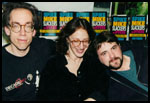
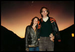

John and Janet with Kevin Smith
Dolly's Book Store, 1996
Park City, Utah

John and Janet Pierson
Telluride, 1983
|
|
Janet Pierson was formerly responsible for the vision, programming,
and execution of the SXSW Film and TV Festival and the film and episodic
focused content within the SXSW Conference. As of 10/3/2022 she has stepped
into a Director Emeritus role, remaining on the programming team for SXSW 2023.
Before joining SXSW for the 2009 event, Janet spent over 30 years championing independent films and filmmakers
in a variety of roles including exhibitor, producer's rep, executive producer, and segment director of the IFC cable TV
series Split Screen, now streaming on the Criterion Channel. She appears in Steve James' Documentary, Reel Paradise, and
Andrew Bujalski's Beeswax. She loved curating In The Dark: Filmmakers Illuminate, Stories from the Film World for The Moth in 2001.
Pierson made The Guardian's Film Power 100 list in 2010 and 2013's Indiewire Influencers. She regularly serves on panels and juries for other festivals and agencies such as the NEA, ITVS, BFI, and Creative Capital. She is currently a member of the Austin Film Society Advisory Board and UT Press Advisory Board.
Many of the films and careers Pierson has been privileged to be involved with are highlighted here: https://www.sxsw.com/tag/sxsw-film-25/ and here: https://www.sxsw.com/tag/film-alumni-stories/
{% include johnfooter.html %}
Disclaimer: Do not send scripts! We won't read them because we don't
produce films from the script stage.
{% include copyright.html %}
|
|

{kind=link}
{kind=link}